The governing equations are the two-dimensional, incompressible Navier-Stokes equations which can be written in terms of vorticity,
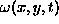
: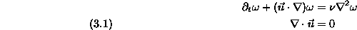
where
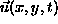
is the fluid velocity and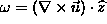
. Since the flow is two-dimensional, the vorticity is directly exclusively in the vertical direction and is treated as a scalar quantity.In previous work on core spreading vortex methods, an alternative formulation of convergence is proposed wherein the spatial accuracy is measured in terms of the ability of the semi-discrete vortex method to approximate solutions of the Navier-Stokes equations [13, 22]. To quantify the spatial accuracy for any Lagrangian method for solving (3.1), Leonard proposed examining the continuous residual of the approximate scheme. This residual can be defined in terms of an operator
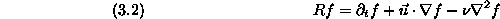
where f(x,y,t) is any sufficiently differentiable function and
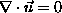
. For the fully nonlinear Navier-Stokes operator.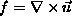
. To estimate the spatial accuracy of the high order method, we consider the linearized operator where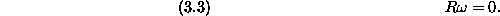
If we let
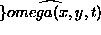
designate an approximation using some numerical scheme, in general we do not expect the residual,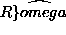
, to be zero.For a core spreading vortex method where the vorticity field is discretized into blobs that move and spread as usual
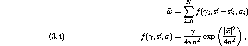
one finds that
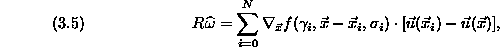
suggesting that this residual quantity is bounded by differences between the exact and approximate velocity across the support of each basis function [22]. That is to say, each basis function satisfies the local equation
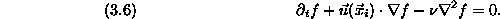
If a basis function, g, satisfied the local equation
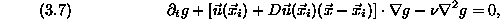
where  is the matrix of partial derivatives of
is the matrix of partial derivatives of  ,
the residual for
,
the residual for  would be
would be
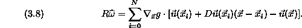
Once can see that (3.7) is a closer approximation to (3.2) and so (3.8) should be of higher order. A Gaussian will not satisfy (3.7), but an elliptical Gaussian will, and this is the basis of the high spatial order vortex method.